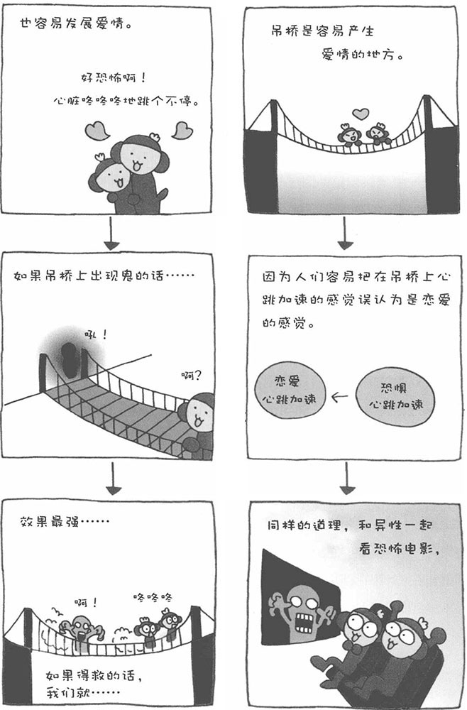

爱情会在各种各样的地方产生，也许您认为谈恋爱和场所没什么关系。实际上，有些地方更容易让人擦出爱情的火花，那就是令人两腿发软的高空吊桥。
接下来，我为大家介绍恋爱心理学上一个非常着名的实验。加拿大心理学家达顿等人分别在两座桥上对18～35岁的男性进行问卷调查。一座桥是高悬于山谷之上的吊桥，吊桥距离下面的河面有几十米高，而且左摇右晃，非常危险；而另一座桥是架在小溪上的一座坚固的木桥，高度也很低。心理学家先让一位漂亮的女士站在桥中间，并由这位女士负责对男士们进行问卷调查。然后，让接受实验的18～35岁的男性过桥，并在桥中央接受问卷调查。 做完问卷调查后，那位女士会对男士说："如果想知道调查结果的话，过几天给我打电话。"并将自己的电话号码告诉给男士。结果，数日之后，给这位女士打电话的男士中，过吊桥的男士远比过木桥的男士多。为什么过吊桥的男士会有这样的行为呢？因为他们把过吊桥时那种战战兢兢、心跳加快的感觉误认为是恋爱的感觉了，而恋爱也会令人心跳加速。这就是所谓的"吊桥理论"或者"恋爱的吊桥理论"。
也就是说，如果善于应用这种心理效应，更容易获得异性的芳心。您可以带您喜欢的人一起去过吊桥或者其他较高的地方，共同感受那种心跳加快的感觉。如果实在找不到合适的地方，去游乐园一同乘坐过山车也是不错的选择。更简单的方法就是一起去看恐怖电影，美国的年轻情侣就经常一同去看恐怖电影。连年轻人都知道这种方法，看来美国人还真是善于运用心理学啊!
